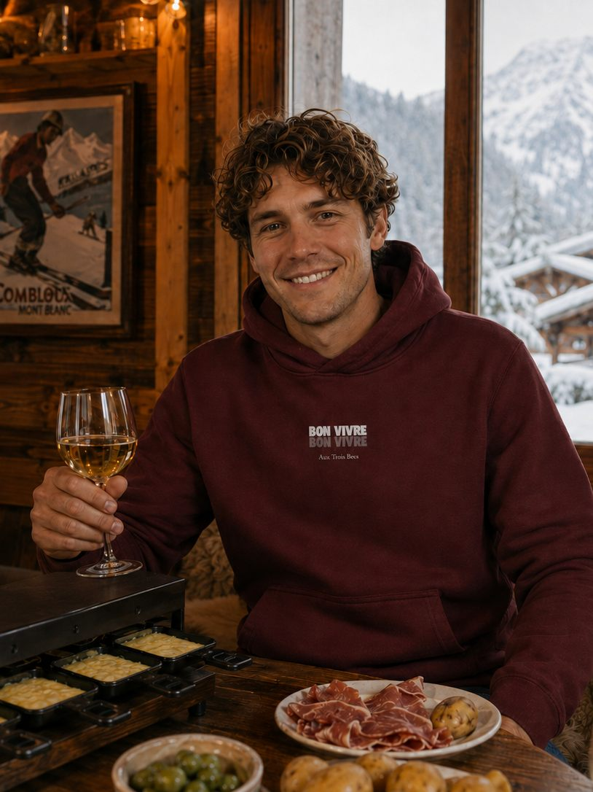
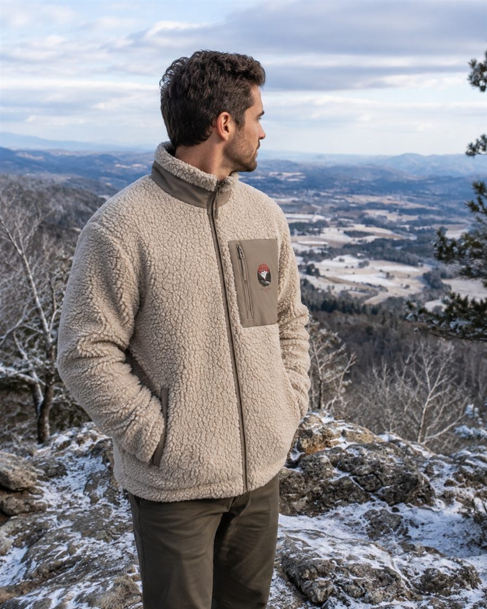

Sweats & Vestes Bon Vivre
Quand l'automne s'installe dans la vallée du Rhône, on ressort les plaids, on allume la cheminée et on programme la prochaine raclette entre copains. Le froid arrive, mais l'envie de se retrouver reste la même. Nos sweats et vestes sont taillés pour ces soirées plus fraîches, jusqu'aux balades en montagne bien couvertes, ou simplement pour un petit-déjeuner en terrasse chauffée avant de partir marcher dans les collines.
La collection Sweats & Vestes Bon Vivre garde l'esprit de nos étés, avec un peu plus de chaleur pour les jours qui rafraîchissent. Un sweat Bon Vivre reste simple, confortable et fabriqué dans des matières responsables, pour accompagner aussi bien vos apéros d'hiver que vos sorties en montagne, entre l'Hermitage et les sommets ardéchois. On les porte aussi bien sur un jean que sur un legging de sport, pour aller à l'essentiel sans réfléchir le matin.
Bon Vivre, vêtement pensé ici en Drôme-Ardèche, mise sur des pièces qu'on garde plusieurs saisons plutôt que sur l'effet de mode. On les a voulues chaudes sans être encombrantes, pour qu'elles suivent aussi bien une soirée raclette entre amis qu'une randonnée improvisée un dimanche matin. Le coton biologique et les matières recyclées restent la base : on ne change pas nos valeurs quand les températures baissent.
Deux pièces pour les jours plus frais
Un sweat léger pour les soirées qui rafraîchissent, une veste bien chaude pour les sorties en montagne. Deux essentiels Bon Vivre, pensés pour durer, dans des matières responsables du premier au dernier fil.


Trois Becs
50 €
« En montagne, on ne compte pas les parts de raclette ! » Ce sweat léger, en 85% coton biologique peigné et 15% polyester recyclé post-consommation, se glisse dans le sac pour les balades comme dans le canapé pour les soirées tranquilles.

Serre de la Roue
60 €
La montagne comme terrain de jeu : cette veste sherpa en 100% polyester recyclé, avec doublure sherpa, poche cœur et fermeture éclair en plastique recyclé, est un Bon Vivre original taillé pour les journées en extérieur.
Une collection qui prend son temps
La gamme Sweats & Vestes s'agrandit petit à petit, saison après saison. On préfère peaufiner chaque pièce plutôt que d'empiler les nouveautés, pour rester fidèles à des matières responsables et à des vêtements qu'on garde longtemps. C'est aussi comme ça qu'on conçoit une marque : sans se presser, entre la Drôme et l'Ardèche.
En attendant les prochains modèles, retrouvez nos t-shirts pour les beaux jours et nos accessoires pour compléter la tenue, du barbecue entre copains jusqu'aux vendanges dans les vignes de l'Hermitage. Que vous cherchiez un t-shirt pour l'été prochain ou un petit accessoire à glisser dans le sac, il y a sûrement une pièce Bon Vivre qui vous correspond déjà. Merci de nous suivre dans cette aventure, pièce après pièce.
Découvrir les t-shirts Bon Vivre → Voir les accessoires →